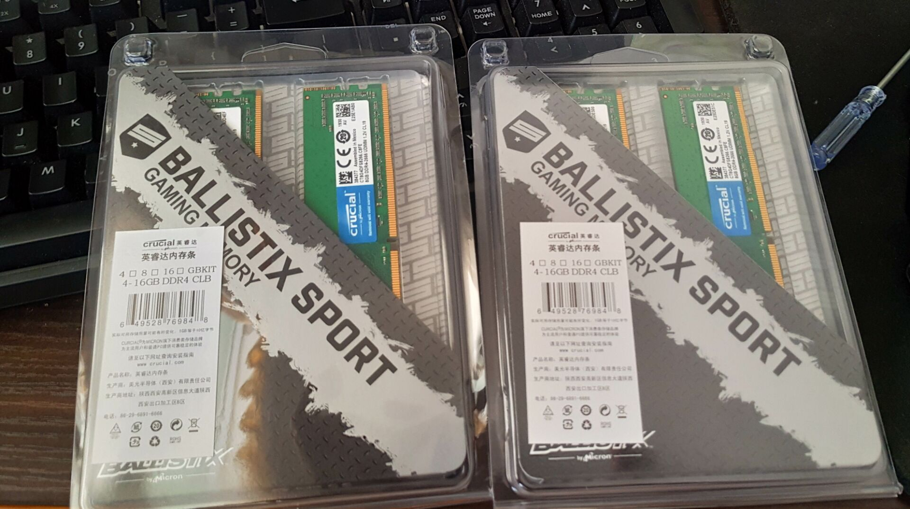
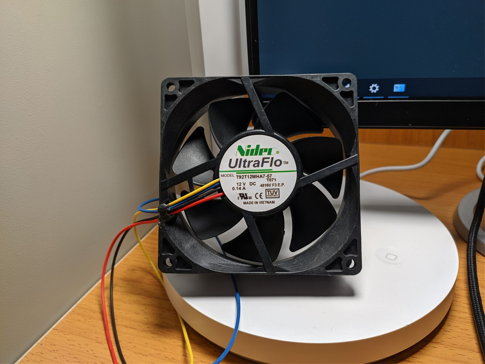
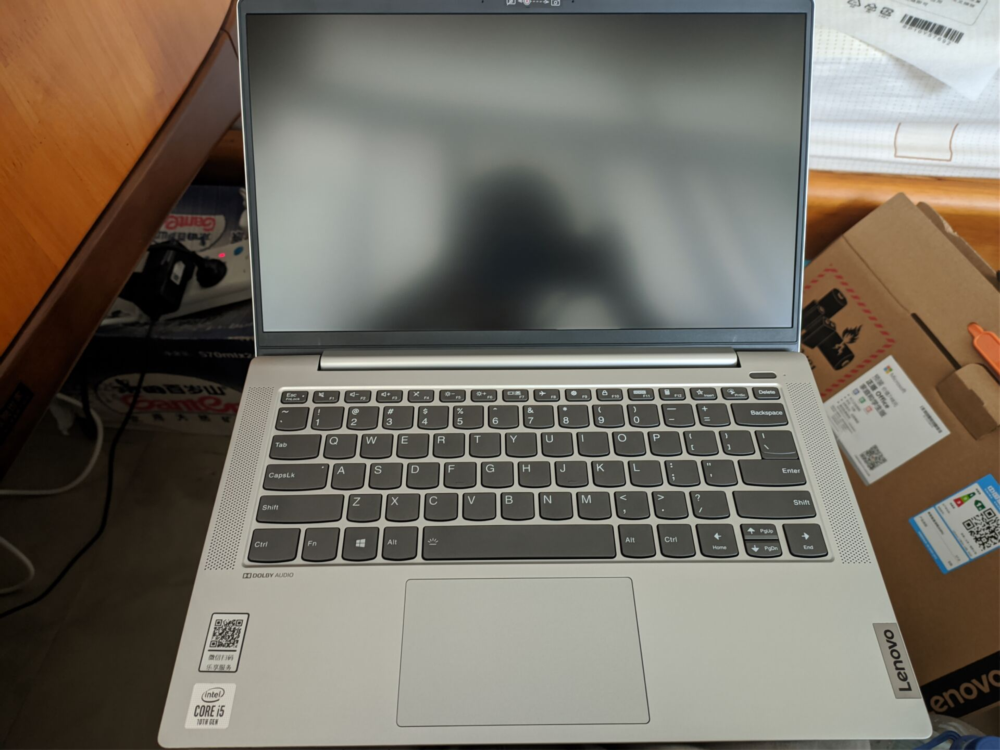
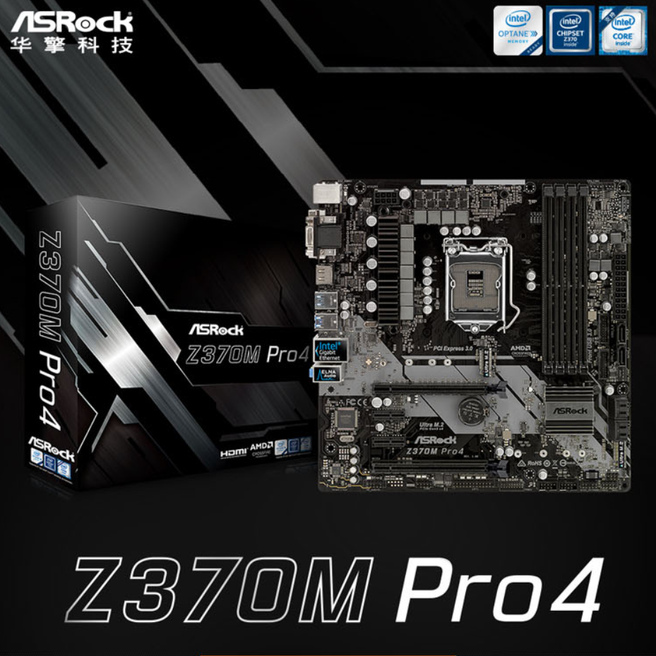

镁光 C9BJZ在Zen+/B450迫击炮平台下4DIMM超频的尝试
PC超频
2019年之末，镁光E-die新颗粒C9BJZ因其高频的特性，迅速在玩家之间流行起来，并替代了之前E-die旧型号D9VPP...
七月 11,2020

日本电产Nidec T92T12MHA7-57 12V 0.14A 9CM工业风扇随笔
PC相关
天气逐渐热起来了，内存超频最重要的一点就是散热，四根内存发热量更加不容乐观，于是...
七月 10,2020

联想小新Air14 2020 I5-1035G1 16+512版本及MX350超频实测
PC超频
在2020年2月末，联想更新了5000主流价位14寸轻薄本小新Air14，并首发了MX350显卡...
七月 9,2020

9600KF搭配丐中丐华擎Z370M Pro4的超频最廉价方案实测
PC超频
作为臭打游戏的玩家，AMD再YES，在游戏性能上还是打不过Intel。于是，最廉价乞丐的5G超频方案应运而生....
七月 8,2020